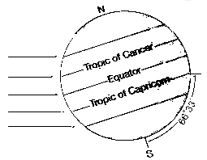

Astronomy is the study of celestial objects and phenomena.
The Earth
The equinox is the moment when the Sun crosses the Earth's equator, these are the days when the Sun is exactly above the equator, which makes day and night of equal length. The solstice is when the Sun's path in the sky is the farthest north or south from the equator. A hemisphere's winter solstice is the shortest day of the year and its summer solstice the year's longest.
In the Northern Hemisphere the June solstice marks the start of summer: this is when the North Pole is tilted closest to the Sun, and the Sun's rays are directly overhead at the Tropic of Cancer. The December solstice marks the start of winter: at this point the South Pole is tilted closest to the Sun, and the Sun's rays are directly overhead at the Tropic of Capricorn.
equinox solstice equinox solstice
Mar Jun Sep Dec
2022 20 15:33 21 09:14 23 01:04 21 21:48
2023 20 21:25 21 14:58 23 06:50 22 03:28
2024 20 03:07 20 20:51 22 12:44 21 09:20
2025 20 09:02 21 02:42 22 18:20 21 15:03
2026 20 14:46 21 08:25 23 00:06 21 20:50
2027 20 20:25 21 14:11 23 06:02 22 02:43
2028 20 02:17 20 20:02 22 11:45 21 08:20
The Gregorian calendar is a solar calendar designed to maintain synchrony with the mean tropical year. It has a cycle of 400 years (146,097 days). Each cycle repeats the months, dates, and weekdays.
The average year length is 146,097/400 = 365/400 = 365.2425 days per year The mean tropical year 365.2422 days
If society in the future still attaches importance to the synchronization between the civil calendar and the seasons, another reform of the calendar will eventually be necessary. If the tropical year remained at its 1900 value of 365.24219878125 days the Gregorian calendar would be 3 days, 17 min, 33 s behind the Sun after 10,000 years. Aggravating this error, the length of the tropical year is decreasing at a rate of approximately 0.53 s per century. Also, the mean solar day is getting longer at a rate of about 1.5 ms per century. These effects will cause the calendar to be nearly a day behind in 3200. The number of solar days in a "tropical millennium" is decreasing by about 0.06 per millennium. This means there should be fewer and fewer leap days as time goes on.
The Moon
Program to calculate the moon phases:
cc -lm moon.c -o moon && ./moon view raw